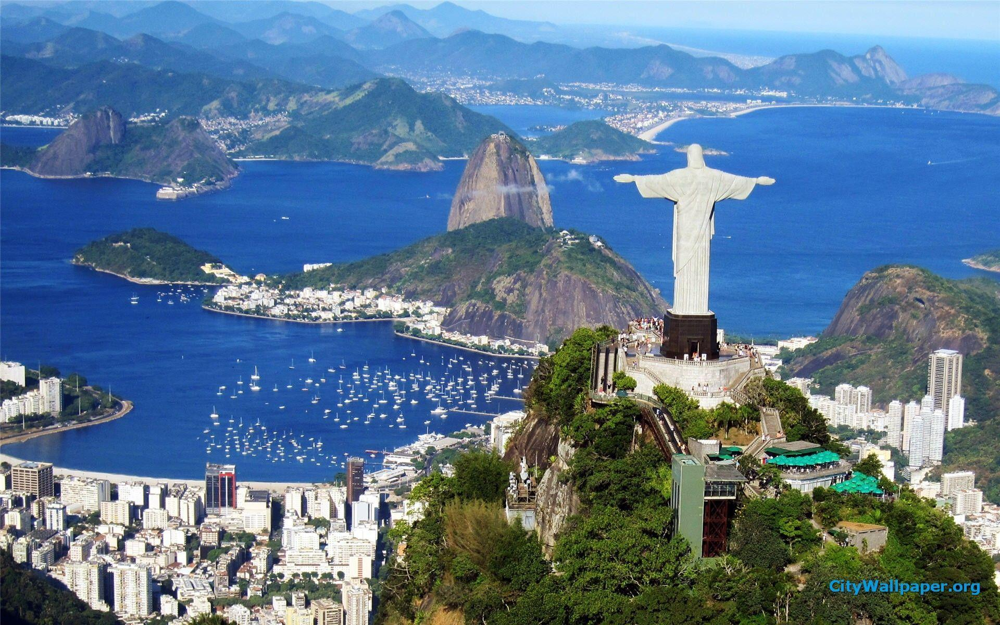
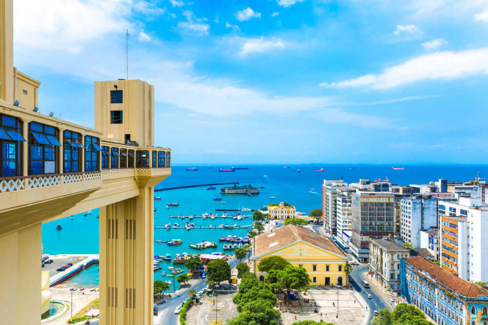
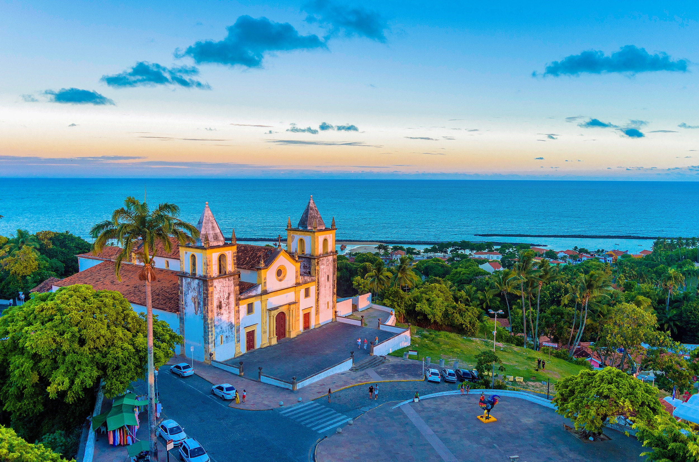
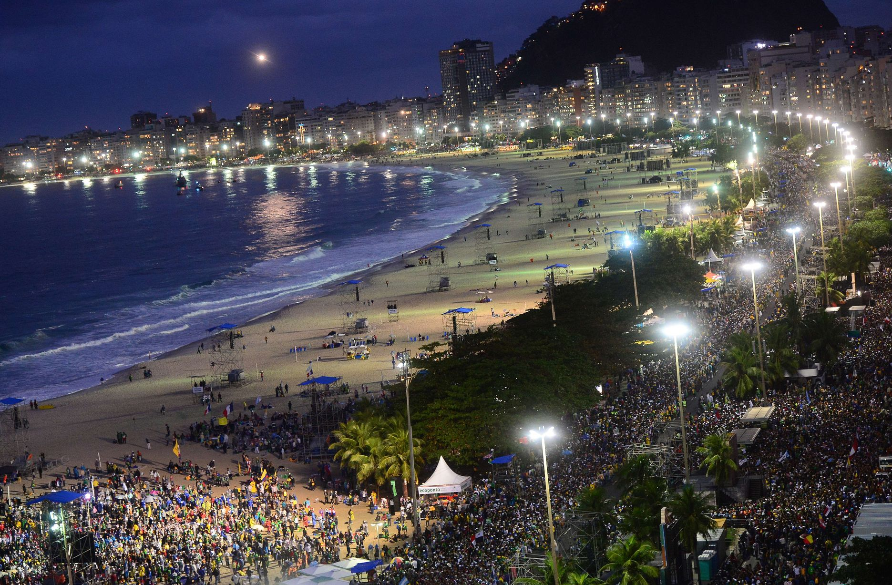

BRAZIL
RIO DE JANEIRO
Rio de Janeiro (/ˈriːu dʒi ʒəˈneɪruː/; Portuguese: [ˈʁi.u d(ʒi) ʒɐˈne(j)ɾu] (listen);[5] literally River of January), or simply Rio,[6] is a city in the Southeast Region of Brazil. Listed by the GaWC as an beta global city, the municipality of Rio de Janeiro is the second-most populous city in Brazil and the sixth-most populous in the Americas. Rio de Janeiro serves as the capital of the state of the same name, Brazil's third-most populous state. Part of the city has been designated as a World Heritage Site, named "Rio de Janeiro: Carioca Landscapes between the Mountain and the Sea", on 1 July 2012 as a Cultural Landscape.[7]

SALVADOR
From the late 19th to the mid-20th century, El Salvador endured chronic political and economic instability characterized by coups, revolts, and a succession of authoritarian rulers. Persistent socioeconomic inequality and civil unrest culminated in the Salvadoran Civil War from 1979 to 1992, fought between the military-led government backed by the United States, and a coalition of left-wing guerrilla groups. The conflict ended with the Chapultepec Peace Accords. This negotiated settlement established a multiparty constitutional republic, which remains in place to this day.

OLINDA
Olinda (Portuguese pronunciation: [oˈlĩdɐ]) is a historic city in Pernambuco, Brazil, in the Northeast Region. It is located on the country's northeastern Atlantic Ocean coast, in the Metropolitan Region of Recife, the state capital.[3] It has a population of 393,115 people, covers 41.681 square kilometres (16.093 sq mi), and has a population density of 9,437 inhabitants per square kilometer. It is noted as one of the best-preserved colonial cities in Brazil,[4] and has been inhabited since 1535

SUDARLOAF MOUNTAIN
Sugarloaf Mountain (Portuguese: Pão de Açúcar pronounced [ˈpɐ̃w̃ d͡ʒ(i) ɐˈsukaʁ]) is a peak situated in Rio de Janeiro, Brazil, at the mouth of Guanabara Bay on a peninsula that juts out into the Atlantic Ocean. Rising 396 m (1,299 ft) above the harbor, its name is said to refer to its resemblance to the traditional shape of concentrated refined loaf sugar. It is known worldwide for its cableway and panoramic views of the city and beyond.
The mountain is one of several monolithic granite and quartz mountains that rise straight from the water's edge around Rio de Janeiro. Geologically, it is considered part of a family of steep-sided rock outcroppings known as non-inselberg bornhardts.

COPACABANA BEACH
Copacabana beach, located at the Atlantic shore, stretches from Posto Dois (lifeguard watchtower Two) to Posto Seis (lifeguard watchtower Six). Leme is at Posto Um (lifeguard watchtower One). There are historic forts at both ends of Copacabana beach; Fort Copacabana, built in 1914, is at the south end by Posto Seis and Fort Duque de Caxias, built in 1779, at the north end. Hotels, restaurants, bars, nightclubs and residential buildings dot the promenade facing Avenida Atlântica. On Sundays and holidays, one side of Avenida Atlântica is closed to cars, giving residents and tourists more space for activities along the beach.
